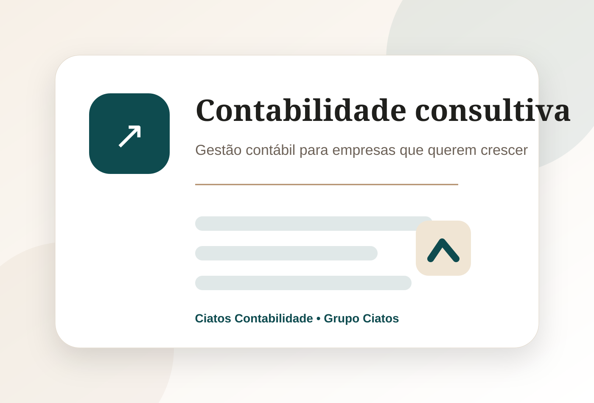
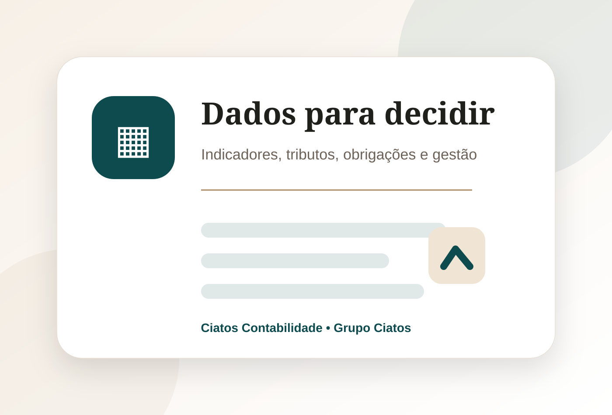
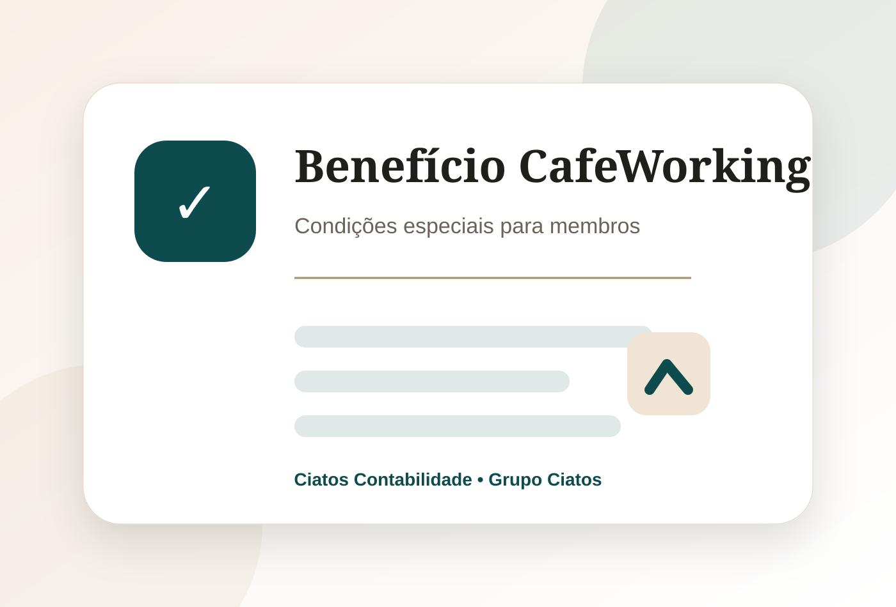

Abertura de empresa
Constituição de CNPJ, orientação de CNAE, natureza jurídica e regime tributário.
Clientes do CafeWorking podem contratar os serviços da Ciatos Contabilidade com condições especiais, integrando endereço fiscal, abertura de empresa, gestão contábil e suporte empresarial.

A contabilidade não deve ser apenas emissão de guias e entrega de obrigações. Ela precisa ajudar o empresário a entender números, reduzir riscos, melhorar decisões e manter a empresa regular.
A Ciatos Contabilidade atua com uma visão consultiva, conectada ao ecossistema do Grupo Ciatos, para apoiar pequenas empresas, prestadores de serviço, profissionais liberais e negócios em crescimento.
Da abertura do CNPJ à rotina mensal, a Ciatos Contabilidade oferece suporte para empresas que precisam de organização, segurança e crescimento.
Constituição de CNPJ, orientação de CNAE, natureza jurídica e regime tributário.
Escrituração, apuração de impostos e cumprimento das obrigações legais.
Orientação sobre impostos, notas fiscais, enquadramento e riscos fiscais.
Folha de pagamento, pró-labore, admissões, rescisões e obrigações trabalhistas.
Apoio na leitura de números, indicadores e acompanhamento do desempenho.
Suporte estratégico do Grupo Ciatos para decisões financeiras, fiscais e societárias.

O cliente que contrata salas, coworking ou endereço fiscal pode também contar com a Ciatos Contabilidade para abrir, organizar e manter sua empresa regular.
Clientes do CafeWorking podem receber desconto na contratação dos serviços contábeis da Ciatos Contabilidade, conforme plano e escopo contratado.
Consultar benefícioAo unir CafeWorking e Ciatos Contabilidade, o empresário pode começar com endereço empresarial, salas para receber clientes, suporte contábil e orientação para crescer de forma mais organizada.

A Ciatos Contabilidade atende diferentes perfis de negócio, com foco em organização, regularidade e apoio à gestão.
Empresas prestadoras de serviço que precisam emitir notas, apurar impostos e manter regularidade.
Advogados, consultores, arquitetos, terapeutas, contadores, médicos e outros profissionais.
Negócios em crescimento que precisam de rotina fiscal, contábil, trabalhista e gerencial.
Clientes que usam endereço fiscal, coworking ou salas podem ter condições especiais.
Sim. A Ciatos Contabilidade integra o Grupo Ciatos, mesmo ecossistema empresarial do CafeWorking.
Sim. Clientes CafeWorking podem receber condições especiais na contratação dos serviços contábeis.
Sim. A Ciatos Contabilidade realiza abertura de empresa e orienta sobre CNAE, regime tributário e documentação.
Sim, mediante contratação do plano de endereço fiscal e análise de viabilidade da atividade.
Sim. O atendimento pode ser feito para empresas em diferentes cidades do Brasil, conforme necessidade e viabilidade.
Sim. A equipe orienta sobre o melhor enquadramento considerando atividade, faturamento e estrutura do negócio.